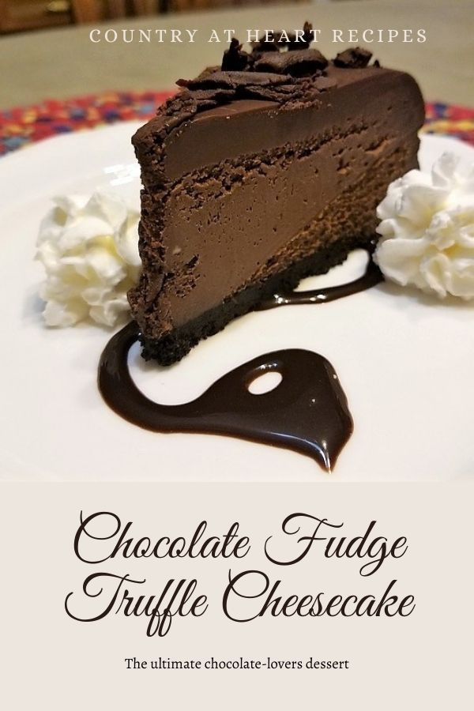

Fudge truffle cheesecake

do you want a creamy chocolate that satiate you and your friends? with few steps and few ingredients you'll
have a delicious dish that everyone will enjoy, once you try you'll love it.
ingredients
- 4 eggs
- 2 teaspoons vanilla extract
- 1/3 cup butter, softened
- 1/2 cup confectioners' sugar
- 1/3 cup unsweetened cocoa powder
- 1 1/2 cups vanilla wafer crumbs
- 3 (8 ounce) packages cream cheese, room temperature
- 1 (14 ounce) can sweetened condensed milk
- 2 teaspoons vanilla extract
Directions
- heat the oven up to 150 degrees C
- In a bowl mix the crushed vanilla wafers, icing sugar, cocoa and butter. Press ingredients into a 9-inch springform pan.
- In the top of a double boiler, melt the chocolate chips, making sure that they are very smooth.
- In a large bowl, beat cream cheese until fluffy with an electric mixer. Gradually beat in condensed milk until smooth. Mix in melted chocolate, eggs, and vanilla. Beat with electric mixer on low speed until the ingredients are thoroughly blended. Pour the filling into the prepared crust.
- Bake at 300 degrees F (150 degrees C) for 55 minutes. The cake will seem underbaked in the center, but will continue to cook after you remove it from the oven
- Allow to cool to room temperature, then refrigerate for several hours before serving.